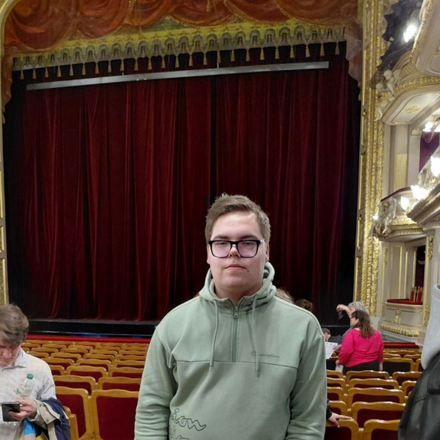

Про мене
- ПІБ: Мамонтов Євген
- Група: група № ІН-41/1
- Мій унікальний колір-акцент: #b44cff
- Улюблений інструмент розробника: DevTools
- Fun fact: Моя улюблена домашня тваринка - кіт. Ну, і собаки також...
Мій перший компонент UI
Цей компонент стилізовано моїм індивідуальним кольором-акцентом і містить мій унікальний ідентифікатор сторінки,
який генерується у main.js при завантаженні.
Чекліст для перевірки
- Документ має індивідуальний title із моїми ПІБ і групою.
- Задано персональний колір-акцент (CSS змінна
--accent). - Виводиться мій унікальний ідентифікатор сторінки (генерується у JS).
- На сторінці є мій аватар або заглушка.
- У консолі є персональне вітання.